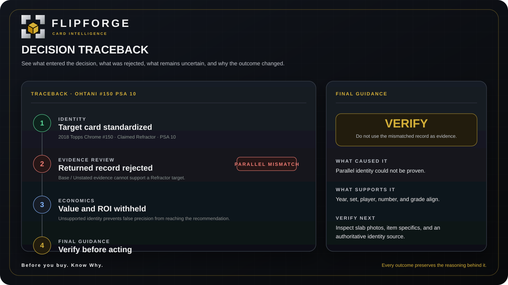

Go deeper only where you want the detail.
This is the technical layer behind the Product page. Each section explains one defining intelligence system without forcing every visitor to read everything at once.
ForgeScore™
Confidence the evidence has earned.
ForgeScore™ makes confidence visible inside the evaluation and opportunity workflow. It is designed to help distinguish a strong case from a weak one instead of hiding uncertainty behind a single price.
It works alongside identity validation, evidence quality, liquidity, risk, and other decision inputs rather than acting as a standalone promise of profit.

ForgeSignal™
Find candidates worth your attention.
ForgeSignal™ is the opportunity layer. It ranks and filters candidates while preserving evidence gates, duplicate controls, value-gap context, profit and ROI screens, and handoff into deeper review.
ForgeSignal™ surfaces possibilities. It does not auto-buy cards or replace the collector’s final judgment.
Opportunity intelligence is connected to the same identity, evidence, and confidence controls used downstream.
Exact-Card Identity
Value the card you actually have.
Year, set, card number, parallel, variation, grader, and grade are kept separate. Conflicts can trigger review or rejection before mismatched evidence is allowed to influence value.
This matters because a convincing sold price is still weak evidence if it belongs to a different card configuration.
Evidence Trust
A comp has to earn the right to count.
FlipForge keeps provenance and evidence quality visible. Records can be accepted, held for review, or rejected so wrong grades, wrong parallels, duplicates, weak records, and context-only prices are not silently blended into the result.
The point is not to collect the most data. It is to control which data is allowed to influence the decision.

PSA Intelligence
Model the grade curve, not just the PSA 10.
FlipForge connects grading cost, sold-comp-backed grade lanes, multiple grade outcomes, value curves, break-even logic, downside, and population context where available.
The best-case slab price is not treated as expected return. The evaluation is meant to show what has to go right and what happens when it does not.

Decision Traceback
See why the answer changed.
FlipForge preserves the evidence, exclusions, warnings, uncertainty, and reasoning behind the guidance. The result is designed to be traceable rather than a black-box recommendation.
That means you can see what influenced the outcome, what was excluded, what remains unresolved, and what verification step comes next.

Outcome Calibration
Compare the decision with what happened next.
FlipForge includes an outcome-calibration layer that can compare prior guidance with resolved outcomes and support controlled calibration review.
The purpose is a governed feedback loop: learn from outcomes without silently rewriting history or pretending every prior recommendation was correct.
You do not need all of this detail to use FlipForge.
The Product page stays concise. The Intelligence Center is here when you want to inspect the machinery.